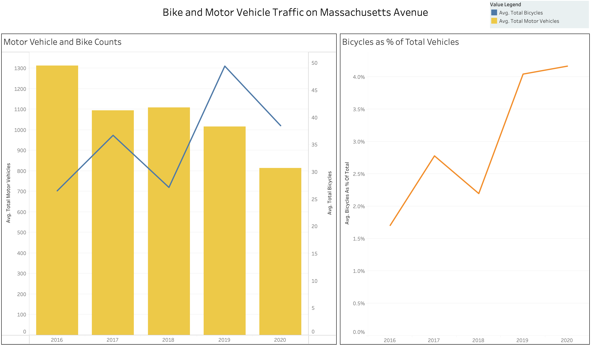
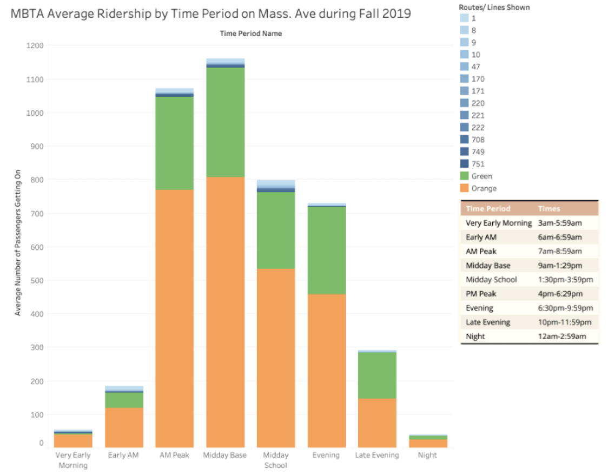
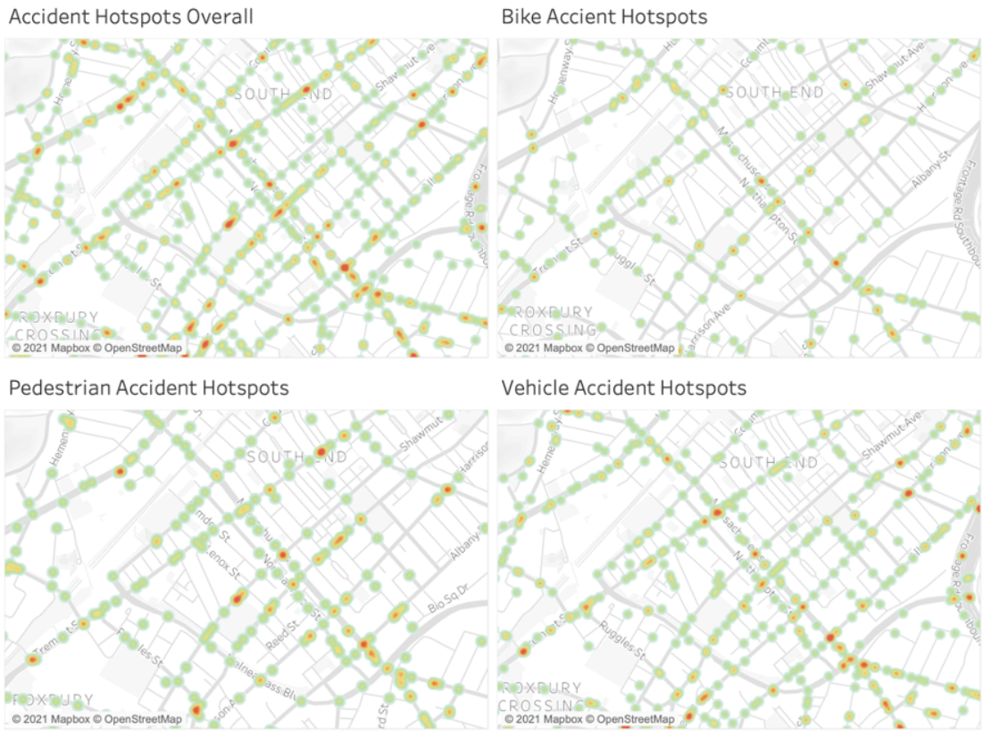
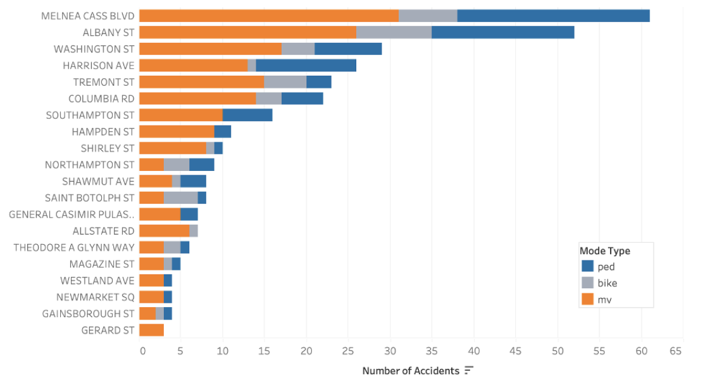

Data Analysis
Observation 1: Bike and Motor Vehicle Traffic

When analyzing traffic data, we discovered an interesting trend of a decreasing daily average of cars and an
increasing daily average of bicycles on Massachusetts Avenue when comparing 2016 data with 2020 data. This
combination leads to an increase of bicycles as a percentage of total vehicles, as demonstrated by the line chart
on the left. It would be interesting to look further into why 2018 had a dip in bicycle count. The 2020 dip could
be attributed to the COVID-19 pandemic when people were discouraged from leaving their homes.
Observation 2: Reliability of the MBTA

We analyzed the reliability of three MBTA routes near Chester Square from 2016 to 2021: the 1 bus, Green E line,
and Orange line. Reliability is measured by the percentage of people who did not face significant wait times or
service disruptions. As expected, the bus is consistently the least reliable MBTA route. Both the bus and Green
line have improved over time, while the Orange line decreased in reliability between 2016 and 2021.
Observation 3: Average MBTA Ridership Over a Day

We also looked at the average number of onboards over the course of the day for all bus and rail lines that go
through stops along Mass. Ave. When looking at this data, we noticed a few things. First, we saw that the rail
lines are much more used than the bus routes, especially later in the day. Further, we noticed that there is
significantly more usage of public transit from about 7AM-1:30PM than throughout the rest of the day.
Observation 4: Accident Hotspots

We also looked at data regarding where accidents occur in the South End area near Mass. Ave. These maps show the
density of accidents in the area, with green being where low amounts of accidents occur and red being where a high
number of accidents have occured. We also broke down the data based on the crash type: vehicle, bike, or pedestrian.
Something interesting about the data is that there are different hotspots of accidents depending on who was
involved. For instance, there is a high number of pedestrian accidents on Shawmut Ave. between Kendall St. and Lenox
St, but this is not a problem area for other modes of transportation. One commonality amongst all of the types is a
series of hotspots near the Boston Medical Center campus, indicating that the intersections there are potentially
more accident-prone.
Observation 5: Intersections with Highest Accident Counts

In looking at accident data, we also broke down the number of accidents by intersection along Mass. Ave. We found
that the Melnea Cass Blvd./ Mass. Ave. intersection is by far the most accident-prone, reflecting the data shown
in the maps above. It is also interesting to note that some intersections are more dangerous for different
transportation types than others, such as Allstate Rd. has no recorded pedestrian accidents.